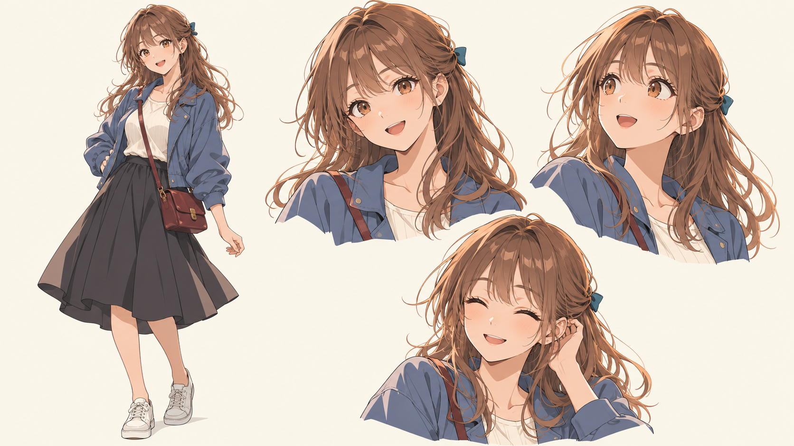

MANA / CHARACTER STUDY
まなの表情と、線。

登場場所は街のライブ映像の中を基本に、必要な場面で短く。通常ページへの常駐は行いません。
制作状況
添付参考に合わせ、輪郭線とセル影、表情を見直した候補です。顔と服の最終採用、歩行、ライブ接続は未完了です。
MANA / CHARACTER STUDY

登場場所は街のライブ映像の中を基本に、必要な場面で短く。通常ページへの常駐は行いません。
添付参考に合わせ、輪郭線とセル影、表情を見直した候補です。顔と服の最終採用、歩行、ライブ接続は未完了です。